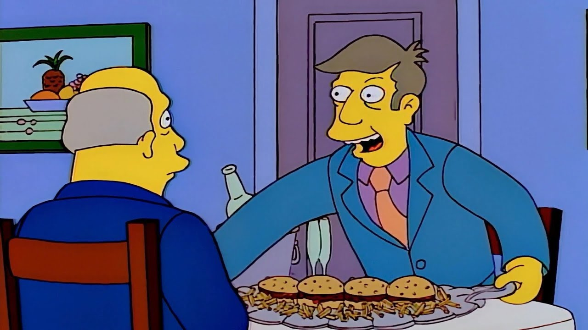

Steamed Hams

Description
Hamburgers. An Albany, New York expression, its not to be confused with steamed clams.
Ingredients
(2 Servings)
- 1 Whole chicken
- 4 sesame-seed hamburger buns
- 500g beef mince
- The shittest pickles from Circle K you can find
- Half an onion
- Coupla tomatoes
- Iceberg lettuce
- Mayo & tomato sauce
- 64 slices of american cheese
Steps
- Preheat your oven to 220 degrees and chuck the chicken in
- Leave it in for a while (the longer the better)
- Pull out the burnt chicken and place it aside. We won't be needing this
- OPTIONAL: Stretch your calves on the windowsill for good measure.
- Season the mince with salt & pepper and form into patties.
- Butter the hamburger buns and toast them until lightly browned.
- Get the BBQ going and cook each patty for two to three minutes each side
- Assemble buns with desired fillings and serve on a silver platter.
Return